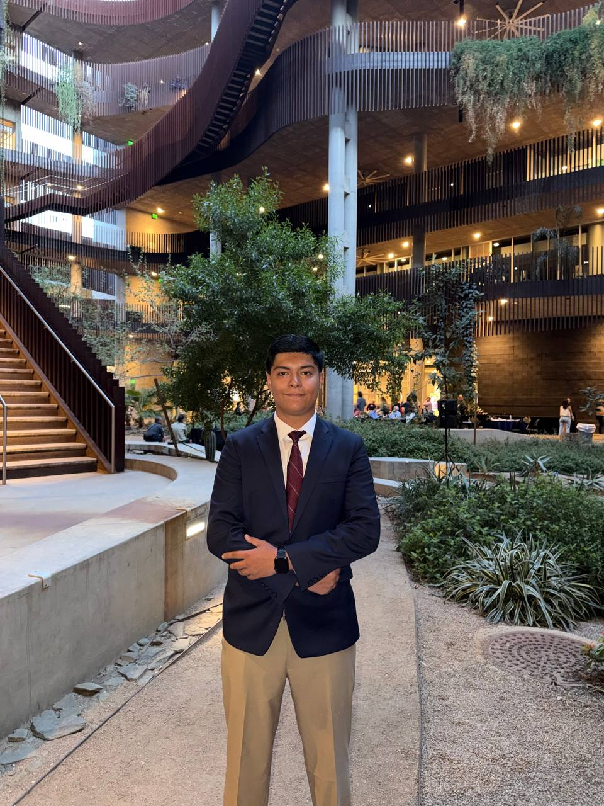

Driven by Purpose,
Defined by People
I'm Bekzod — a finance professional in the making, originally from Uzbekistan and currently pursuing my Bachelor of Science in Business Administration at the University of Arizona's Eller College of Management, with a major in Finance and a minor in Entrepreneurship.
What drives me isn't just numbers — it's the story behind them. Whether I'm building macroeconomic models at the Ministry of Finance of Uzbekistan, visualizing data with Tableau, or helping patrons at Campus Recreation, I bring the same energy: genuine care, intellectual curiosity, and a commitment to excellence.
I speak Uzbek, Russian, and English fluently — and I believe cross-cultural communication is one of the most powerful tools in any professional's toolkit. My goal is to break into wealth management, where I can blend financial analysis with the human side of client relationships.

